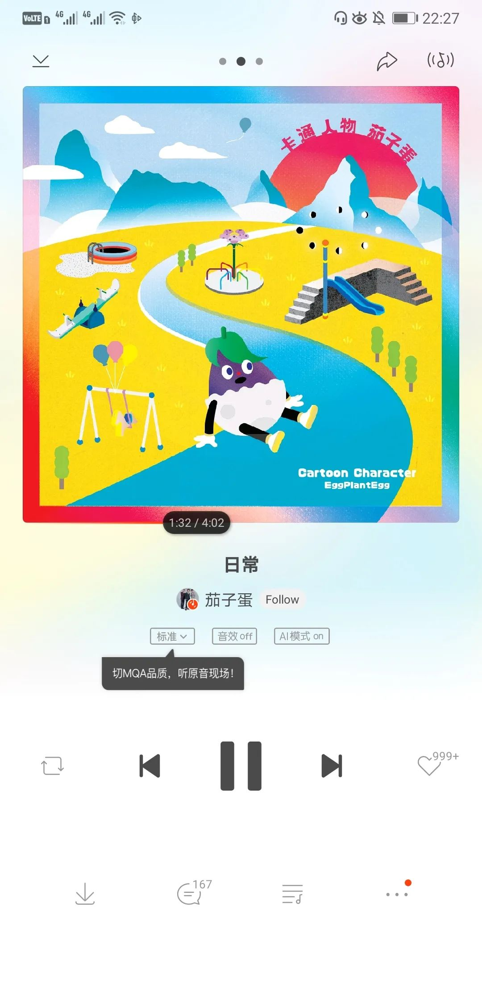

过去的36小时里，Mla发了新专、字幕组陷落、一位大家很喜欢的音乐人离开。未来的36小时里，虾米音乐将在5号零点停服。听了两边编辑部的歌单。开篇的东莞和八月夜桂花，还以为是打开了自己的歌单。
听歌，是在听什么呢？还有看剧、看书，人们在找书里的东西，在找一样的东西吗某种熟识感还是什么？导演给一群农民放关于城市的纪录片，很长时间里农民们都只记得那只在街上一闪而过的摇摆公鸡。读了许多的文献，看了看方法部分就觉得，也不过如此。卡夫卡的《城堡》、北岛的《青灯》还有廖一梅的《悲观主义的花朵》所以现代教育只教会要求并且训练我们去为了自己的选择奋斗努力拼命，之于这个选择是随便选的、别人不知道出于什么为你代选的、还是自己做了一点点slightly调研而选择的，就几乎不管，净神头鬼脑地念“既来之则安之”。事实上选择和努力比，前者更像是一个需要长期积累的短时动作后者更多被描述为长期的固定动作。前者因为时间短而不被重视，虽然更重要，但总因为长期积累做不了而被随意对待。比如如果还选了保研和考研，那断然不会这么早开始就为了读博退学而反复权衡；如果选择的是社会学和城乡规划，那可能就是从现在的的失望里又转而跳入另一个坑只不过是一个我喜欢的坑。类似的很多，错过了就错过了事和人都如此。即使现在开始抢救，依然有很多遗憾朋友知道什么时候该忽略我说的话，于是转而像模拟法庭一样抛出了一个问题：“你说的归根结底是在问，什么是可控的？更甚一点，什么是可知的？”这很好，不会被我说的带跑有自己的节奏。遇到对手了。Memo上还有一句俏皮话：one melon a day, keeps doctor away没有过气的是，这样的事情总会来一遍。从古早年代的2048，到Flappy Bird别踩白块。后者倒是成为了体系化的音游，其他的什么跳一跳、是人就下100层，还有一个到处弹的弹珠。需要简单易得的正向反馈时，他们就来了。毕竟有时候听人跟我说一些我其实知道很多的内容，我会想到阿长与山海经。是那种阿长在说一些自己并没有看过的山海经，只是随便糊弄别人、和稀泥以期一种自得的生活状态。有人问我为什么最近不在推文/pyq记录自己的生活了。我说：有什么好记的？难道要拍下来实验记录本给你们看才满意吗？去吃一家不错的日料店，在对坡县的烤冷面和肉夹馍失望之后。料理店小哥说日语，而且是不会中英文的那种。坐在吧台不管问什么，他都得去找另外会说英文的服务生来才可以对话。餐后我给他看了这张我修的照片：他回了一大串我听不懂的日语，最多也就能听懂斯国一。然后鞠躬送走了我们。有多少我能注意到的内容，实际上还是在我看过的书、吃过的饭和见过的人里边呢？
当艺术史绑架了艺术家，艺术就实现了自我封闭。在自己域内的封闭。只学过算术而没有学过数学的人，应该看不懂这个词。去跟新加坡的本科生打排球，要用英文就令人很费解。因为我的动作大多和喊出来的话在一起，如果单纯不说话，倒也没什么。不够如果非得和队友说英语的话，就会和肌肉记忆不一样。二传动作我已经做出来了，因为要和队友说给高你扣，于是开始想英文该怎么表达给高和你扣。只要开始想，动作就会跟着一起慢下来，反映到自己就是动作变形。是呀，当肌肉记忆不合乎嘴上的语言，运动的时候脑子里当然只留了必要的运存给语言，大部分进程都在肢体运动。一旦还得分神给语言和处理，我不知道这样的运动怎么可能不走样。就好比运动场上，叫人的名字一般只有两个音节，容易喊也容易听。如果这个球我来接，我就一定会说“我来”。如果这球我不来，我就该说“你来”而不是“我不来”。虽然效力上而言，我不来就意味着你来，但是算法复杂度太高了，魂斗罗和坦克大战都宣称我们不做这样的事。记得以前和Leewell去打排球，他天真地喊了一句“我我我来不了。”听懂了之后笑得我要承包他三个鸡蛋灌饼加培根香肠才能回报他承包我的笑点。